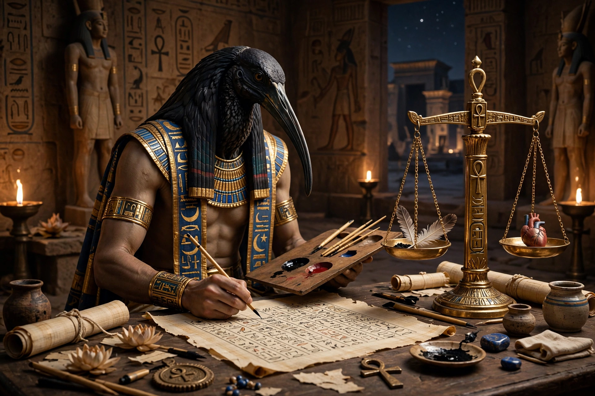

From Wikipedia, the free encyclopedia
| Thoth | |
|---|---|
| Affiliation | Egyptian mythology; god of writing, wisdom, the moon and reckoning |
| Cult centre | Hermopolis (Khmunu) |
| Depicted as | Ibis, ibis-headed man, or baboon |
| Roles | Inventor of hieroglyphs; scribe of the gods; recorder at the weighing of the heart |
| Greek counterpart | Hermes (Hermes Trismegistus in syncretism) |

Thoth (Egyptian Djehuty) is the ancient Egyptian god of writing, wisdom, reckoning, the moon and magic, depicted as an ibis, an ibis-headed man with a scribe's palette, or a baboon. As inventor of hieroglyphs and divine scribe, he recorded the verdict at the weighing of the heart in the judgement of the dead, kept the annals of the gods, and authored — tradition claimed — the sacred books of Egyptian learning. His cult centre was Khmunu, "Eight-Town", known to the Greeks as Hermopolis, and in the Graeco-Egyptian syncretism he was identified with Hermes as Hermes Trismegistus, supposed author of the Hermetic writings.
Thoth's intellect makes him the gods' arbiter and counsellor: he helped Isis work the magic that revived Osiris, healed the wounded eye of Horus in the contendings with Set, and devised the reckoning of time, in one myth winning from the moon god Khonsu, at a game of draughts, the five extra days of the Egyptian year on which Nut's forbidden children could be born. The Egyptians credited him with the invention of writing, astronomy, mathematics and medicine; Plato, in the Phaedrus, retells an Egyptian tale in which Thoth (Theuth) presents writing to the king Thamus — and is told it will breed forgetfulness, a debate about technology that philosophers of media still cite.
In the Book of the Dead's judgement hall, Thoth stands by the scales as Anubis weighs the heart and announces the result to the tribunal; his fairness made him the patron of scribes, whose patron he remained for three thousand years — scribal statues show him as a baboon watching over the writer. The "Book of Thoth" became a byword for esoteric wisdom, and the Hermetica's fusion of Thoth with Hermes fathered a tradition of alchemy and occult philosophy that ran through the Renaissance and beyond.
Egyptian mythology · Anubis · Set · Ra · Horus